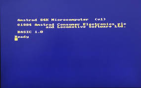
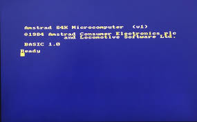
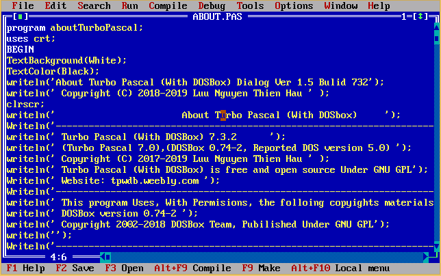
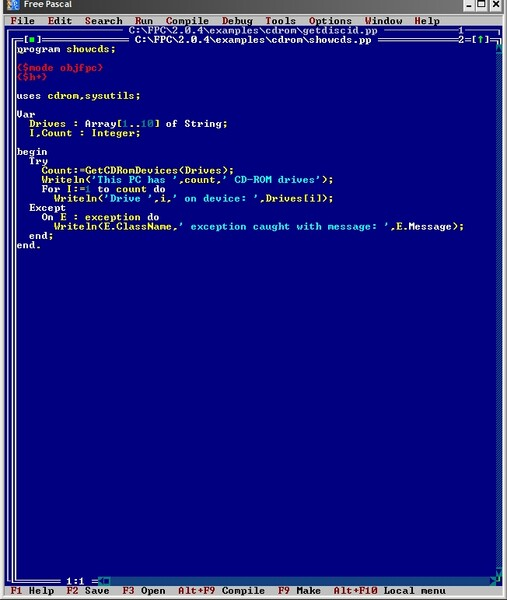

Cuando era joven tenia un ordenador Amstrad. En cierto momento la disquetera dejo de funcionar por lo que para darle uso aprendi este lenguaje para aprovechar dicho terminal. Este lenguaje carecia de las arquitecturas modernas (funciones ,objetos, etc) pero a traves de un codigo de lineas por bloque se podian emular las funciones. En este desarrolle juegos como el buscaminas, hundir la flota, o snake ademas de aprender ASCII y diseño de graficos de 8 bits(no lo recomiendo)
 
Ya mas adulto aprendi en el instituto Pascal. Donde ya aprendi bastante bien el uso de estructuras de control y parte de la union con el axioma matematico lo mas destacable de esos 9 meses de estudio fue la lectura/escritura de ficheros como el concepto de arrays

